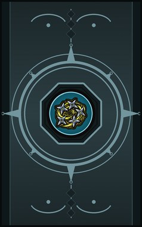
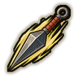
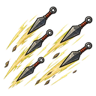
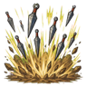

Technique trees › Fighting and weapon styles
The Art of Throwing
5 techniques in the Taijutsu tab.
Unlocks through World of Naruto's own trees, a gene, a build choice or a profession.

Kunai Throw D
Chakra 8. A quick, accurate kunai.
Kunai Throw D
Chakra 8. A quick, accurate kunai.
A quick, accurate kunai.
| Rank | Chakra | Cooldown | Class level |
|---|---|---|---|
| D | 8 | 10 s | 2 |
Shuriken Fan C
Chakra 17. Five shuriken at once.
Shuriken Fan C
Chakra 17. Five shuriken at once.
Five shuriken at once.
| Rank | Chakra | Cooldown | Class level |
|---|---|---|---|
| C | 17 | 15 s | 4 |

Kunai Rain B
Chakra 33. A burst of kunai thrown in quick succession.
Kunai Rain B
Chakra 33. A burst of kunai thrown in quick succession.
A burst of kunai thrown in quick succession.
| Rank | Chakra | Cooldown | Class level |
|---|---|---|---|
| B | 33 | 25 s | 8 |
Windmill Shuriken B
Chakra 24. A huge folding shuriken that cuts deep.
Windmill Shuriken B
Chakra 24. A huge folding shuriken that cuts deep.
A huge folding shuriken that cuts deep.
| Rank | Chakra | Cooldown | Class level |
|---|---|---|---|
| B | 24 | 25 s | 10 |

Thousand Blade Storm A
Chakra 40. A storm of blades falls on an area.
Thousand Blade Storm A
Chakra 40. A storm of blades falls on an area.
A storm of blades falls on an area.
| Rank | Chakra | Cooldown | Class level |
|---|---|---|---|
| A | 40 | 1.2 hours | 14 |
Chakra is the technique's base cost, the number in its def. In play it is multiplied by the pawn's chakra energy usage multiplier, which traits (chakra artificer 90%, volatile conduit 110%), World of Naruto genes and jutsu enhancements change, so the technique window can show a slightly different number for each ninja. Cooldowns are in-game time, as the technique window shows them, and the pawn's cooldown stat shortens or lengthens them. World of Naruto gives every ninja a base of 100 maximum chakra; genes and traits change it.